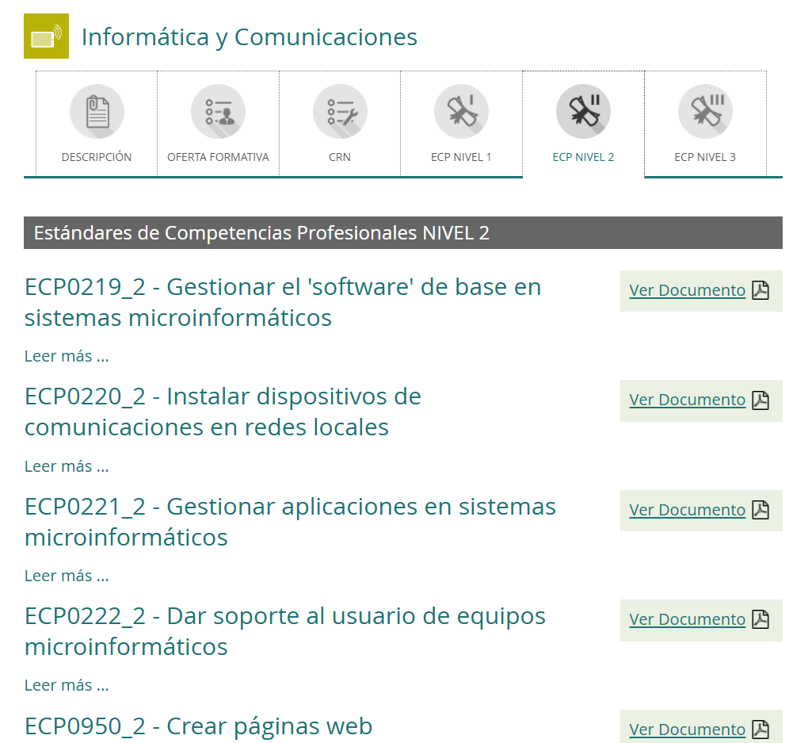

Marco Normativo y Adaptación Curricular a la IA Generativa¶
El Marco INCUAL y su Relevancia en la Formación Profesional¶
El Instituto Nacional de las Cualificaciones (INCUAL) constituye el organismo técnico de referencia en España para la definición y actualización del Catálogo Nacional de Cualificaciones Profesionales (CNCP). Este catálogo es la herramienta fundamental para el diseño curricular de la Formación Profesional (FP) y para la acreditación de competencias profesionales adquiridas por otras vías. Su objetivo principal es garantizar la coherencia y calidad de la formación profesional, así como facilitar la movilidad laboral y el reconocimiento de las competencias.
El CNCP se estructura en Familias Profesionales, que agrupan cualificaciones profesionales afines. Cada cualificación se compone de Unidades de Competencia, que describen el conjunto de capacidades profesionales identificables y acreditables.

Estructura de los Estándares de Competencia Profesionales¶
(ECP) se definen como el conjunto detallado de elementos de competencia que describen el desempeño de las actividades y las tareas asociadas al ejercicio de una determinada actividad profesional con el estándar de calidad requerido. Será la unidad o elemento de referencia para diseñar, desarrollar y actualizar ofertas de formación profesional.
Los estándares de competencias profesionales constituyen la unidad básica para el diseño de la formación y para la acreditación de competencias profesionales adquiridas por experiencia laboral u otras vías no formales e informales. Para dar respuesta a ambas funciones, cada estándar de competencias profesionales contendrá, al menos, los siguientes elementos:
- Datos de identificación: figurarán la denominación oficial, la familia profesional a la que se adscribe, el nivel y un código alfanumérico que lo identifique inequívocamente.
- Competencia profesional describirá el conjunto de conocimientos y destrezas que permiten el ejercicio de la actividad profesional conforme a las exigencias de la producción y el empleo.
- Elementos de la Competencia (EC): describirán las realizaciones profesionales que caracterizan el comportamiento esperado de un trabajador o trabajadora incluidas en los estándares de competencia, así como los Indicadores de Calidad (IC) que establecen el nivel de ejecución exigido en el ámbito profesional para el desempeño de una actividad o tarea, en tanto que satisfacen los objetivos de los sectores productivos y de prestación de servicios.
- Contexto Profesional: en el que se incluirán, con carácter orientativo, el ámbito profesional, los sectores productivos, y las ocupaciones y puestos de trabajo más relevantes, así como las especificaciones generalistas sobre los medios de producción, e información utilizada y generada.
Estándares de Competencias Profesionales (ECP)¶
Las Estándares de Competencia Profesionales representan el pilar fundamental del CNCP. Cada ECP se describe mediante:
- Denominación: Título descriptivo del ECP.
- Nivel: Nivel de cualificación al que pertenece.
- Resultados de Aprendizaje (RA): Enunciados que describen lo que el alumno debe saber, comprender y ser capaz de hacer al finalizar el ECP. Se formulan en términos de acción, rendimiento y contexto.
- Criterios de Evaluación (CE): Indicadores que permiten valorar si el alumno ha alcanzado los Resultados de Aprendizaje. Se formulan con precisión y objetividad.
- Capacidades y Criterios de Realización: Detallan las capacidades que se deben adquirir y los criterios para su correcta ejecución.
- Contenidos: Temáticas y conocimientos asociados al ECP.
- Contexto Profesional: Ámbito en el que se desarrolla el ECP.
Los ECP, al ser bloques funcionales y evaluables de un perfil profesional, permiten una alta modularidad, lo que facilita tanto la adaptación formativa como la acreditación parcial de competencias.
Unidades de Competencia
Anteriormente los Estándares de Competencia Profesional se denominaban Unidades de Competencia.
Resultados de Aprendizaje (RA) y Criterios de Evaluación (CE)¶
Los RA y los CE son elementos clave en el diseño curricular de la FP.
-
Resultados de Aprendizaje (RA):
- Son declaraciones sobre lo que se espera que un estudiante sepa, comprenda y sea capaz de hacer al final de un proceso de aprendizaje.
- Se orientan a la acción y se centran en las competencias observables y medibles.
- Siguen la taxonomía de Bloom o similar para definir niveles cognitivos y de desempeño.
-
Criterios de Evaluación (CE):
- Especifican el nivel de desempeño o los productos del aprendizaje que se consideran aceptables para demostrar la consecución de un RA.
- Proporcionan una base objetiva para la evaluación.
- Deben ser claros, concisos, medibles y observables.
La relación entre RA y CE es directa: cada RA debe tener asociados uno o varios CE que permitan verificar su consecución.
Perfil Profesional en FP¶
El perfil profesional define el conjunto de competencias profesionales que un titulante de Formación Profesional debe poseer para desempeñar un puesto de trabajo en un sector productivo determinado. Se construye a partir de las Unidades de Competencia del CNCP y se concretan en diversos elementos:
- Competencia General: Describe la actividad laboral principal.
- Unidades de Competencia: Detallan las funciones y tareas específicas.
- Entorno Profesional: Define el contexto laboral donde se ejerce la profesión.
- Ocupaciones y Puestos de Trabajo Relevantes: Ejemplifica las salidas laborales.
- Cualificaciones Profesionales Completas: Agrupa los ECP necesarias para una cualificación.
- Módulos Profesionales: Constituyen la oferta formativa del currículo, asociada a los ECP.
Actualización de la FP
Este enfoque permite que la FP responda de manera flexible a las demandas del mercado laboral, formando profesionales con competencias específicas y actualizadas.
Impacto de la IA Generativa en las Cualificaciones Profesionales de Informática y Comunicaciones¶
La integración de la IA Generativa (IAGen) modifica sustancialmente los procesos de trabajo en la familia profesional de Informática y Comunicaciones, requiriendo una adaptación de las competencias profesionales. A continuación, se analiza su impacto en cualificaciones específicas:
Desarrollo de Aplicaciones Multiplataforma (DAM) y Desarrollo de Aplicaciones Web (DAW)¶
La IAGen transforma el ciclo de vida del desarrollo de software (SDLC) en DAM/DAW, afectando a las fases de diseño, implementación, pruebas y documentación.
-
Diseño y Arquitectura:
- Impacto: Herramientas de IAGen (ej., AI-powered design tools) pueden asistir en la generación de prototipos de interfaz de usuario (UI), esquemas de bases de datos y arquitecturas de microservicios, optimizando el time-to-market.
- Competencia afectada: Habilidad para seleccionar y adaptar arquitecturas de software, diseñar interfaces de usuario y modelar bases de datos.
- Ejemplo de ECP relevante: ECP0227_3: "Desarrollar componentes software en lenguajes de programación estructurados y orientados a objetos."
- Evidencia competencial tradicional: Codificación manual de componentes software, aplicación de patrones de diseño clásicos.
- Evidencia competencial con IAGen (sin modificar RA): Identificación de la necesidad de un componente, formulación de prompts efectivos para la IAGen, evaluación crítica del código generado por la IA, depuración y adaptación de ese código, integración del componente asistido por IA en el sistema, y optimización de su rendimiento. Se requerirá demostrar la trazabilidad del prompt y la justificación de las decisiones de refinamiento del código IAGen.
-
Implementación y Codificación:
- Impacto: Los Code Assistants basados en IAGen (ej., GitHub Copilot, Tabnine) aceleran la escritura de código, sugieren funciones, generan tests unitarios y refactorizan código. La velocidad de desarrollo aumenta, pero la demanda de validación y comprensión profunda del código generado por la IA se vuelve crítica.
- Competencia afectada: Programación en diversos lenguajes, uso de frameworks y bibliotecas, aplicación de metodologías ágiles.
- Ejemplo de ECP relevante: ECP0228_3: "Programar en entornos de cuarta generación y herramientas CASE, utilizando tecnologías web."
- Evidencia competencial tradicional: Desarrollo de aplicaciones web utilizando frameworks y APIs específicas, codificación de lógica de negocio y presentación.
- Evidencia competencial con IAGen (sin modificar RA): Utilización de IAGen para la generación inicial de boilerplate code, integración de APIs externas, o desarrollo de funciones complejas. La evidencia debe centrarse en la capacidad del desarrollador para guiar a la IA, interpretar y corregir el código generado, garantizar la seguridad, eficiencia y adherencia a estándares de codificación, y resolver conflictos de dependencia. Los prompts utilizados y las decisiones de aceptación o modificación del código generado deben ser documentados como parte de la evidencia.
-
Pruebas y Depuración:
- Impacto: La IAGen puede generar escenarios de prueba, datos de prueba sintéticos, tests unitarios y tests de integración, así como sugerir soluciones a errores de código.
- Competencia afectada: Diseño de planes de prueba, ejecución de pruebas, depuración de errores, aseguramiento de la calidad del software.
- Ejemplo de ECP relevante: ECP0229_3: "Implementar y mantener bases de datos relacionales y no relacionales."
- Evidencia competencial tradicional: Diseño de esquemas de bases de datos, implementación de consultas SQL, optimización de rendimiento.
- Evidencia competencial con IAGen (sin modificar RA): Utilización de IAGen para generar consultas SQL complejas, scripts de migración de datos, o procedimientos almacenados. La evidencia debe demostrar la capacidad para validar la exactitud de las consultas generadas, optimizar su rendimiento, asegurar la integridad referencial y de datos, y garantizar la seguridad de la base de datos, así como la capacidad de generar datos de prueba sintéticos para la evaluación de la base de datos.
Administración de Sistemas Informáticos en Red (ASIR)¶
La IAGen impacta en la automatización de tareas, la monitorización, la optimización de recursos y la ciberseguridad en entornos de sistemas.
-
Automatización y Orquestación:
- Impacto: Herramientas de IAGen pueden generar scripts de automatización para despliegues, configuraciones y mantenimiento de sistemas, así como proponer soluciones a incidencias. Esto reduce la carga de tareas repetitivas y permite al sysadmin centrarse en problemas de mayor nivel.
- Competencia afectada: Configuración y gestión de sistemas operativos, desarrollo de scripts de automatización, orquestación de servicios.
- Ejemplo de ECP relevante: ECP0235_3: "Administrar sistemas operativos en red."
- Evidencia competencial tradicional: Configuración manual de servicios de red, gestión de usuarios y permisos, scripting con Bash/PowerShell.
- Evidencia competencial con IAGen (sin modificar RA): Utilización de IAGen para generar playbooks o scripts de automatización para Ansible, Puppet o Chef, así como para la resolución de errores en configuraciones de sistema. La evidencia debe enfocarse en la capacidad del administrador para especificar los requisitos del script, validar la lógica generada por la IA, realizar pruebas de integración y garantizar la idempotencia de las soluciones propuestas. La documentación de los prompts y la justificación de las decisiones de adaptación serán esenciales.
-
Monitorización y Detección de Anomalías:
- Impacto: Sistemas de monitorización basados en IAGen pueden analizar grandes volúmenes de logs y métricas para detectar patrones anómalos o comportamientos maliciosos, prediciendo fallos y optimizando el rendimiento.
- Competencia afectada: Implementación de sistemas de monitorización, análisis de logs, gestión de eventos.
- Ejemplo de ECP relevante: ECP0236_3: "Administrar servicios de red e Internet."
- Evidencia competencial tradicional: Configuración de servidores web, DNS, DHCP, VPN. Análisis manual de logs de servidor para identificar problemas de rendimiento o seguridad.
- Evidencia competencial con IAGen (sin modificar RA): Utilización de IAGen para analizar patrones en logs de servicios de red, identificar ataques de inyección SQL en logs de servidores web, o detectar configuraciones erróneas en servidores DNS. La evidencia se centrará en la capacidad del administrador para interpretar las alertas generadas por la IA, diferenciar falsos positivos de amenazas reales, y actuar en consecuencia para mitigar riesgos o resolver problemas de servicio. Se deberá demostrar la capacidad de interactuar con la IAGen para refinar el análisis de eventos complejos.
Seguridad Informática¶
La IAGen es una herramienta de doble filo en ciberseguridad: ofrece nuevas capacidades de defensa, pero también de ataque.
-
Análisis de Vulnerabilidades y Gestión de Riesgos:
- Impacto: La IAGen puede analizar automáticamente código fuente, configuraciones de sistemas y redes para identificar vulnerabilidades potenciales, así como asistir en la generación de informes de riesgo y recomendaciones de mitigación.
- Competencia afectada: Detección y análisis de vulnerabilidades, implementación de medidas de seguridad, gestión de incidentes.
- Ejemplo de ECP relevante: ECP0238_3: "Implementar sistemas seguros."
- Evidencia competencial tradicional: Configuración de firewalls, sistemas de detección de intrusiones (IDS/IPS), cifrado de datos, gestión de identidades y accesos. Realizar pentesting manual.
- Evidencia competencial con IAGen (sin modificar RA): Utilización de IAGen para el análisis estático y dinámico de código en busca de vulnerabilidades, la generación de reglas de firewall optimizadas, o la evaluación de la configuración de sistemas para identificar desviaciones de las mejores prácticas de seguridad. La evidencia debe demostrar la capacidad del técnico para interpretar los hallazgos de la IA, validar su relevancia, y aplicar soluciones efectivas. La interacción con la IAGen para realizar red teaming o blue teaming asistido debe ser demostrable.
-
Respuesta a Incidentes y Detección de Amenazas:
- Impacto: Los sistemas de IAGen pueden correlacionar alertas de seguridad de diversas fuentes, identificar malware desconocido (zero-day threats) y automatizar la respuesta a incidentes, minimizando el impacto de los ataques.
- Competencia afectada: Investigación de incidentes, forense digital, análisis de malware, recuperación de desastres.
- Ejemplo de ECP relevante: ECP0239_3: "Gestionar servicios de seguridad."
- Evidencia competencial tradicional: Gestión de antivirus, copias de seguridad, recuperación de datos, análisis forense de sistemas comprometidos.
- Evidencia competencial con IAGen (sin modificar RA): Empleo de IAGen para el análisis de malware (ej., de-ofuscación de código malicioso, identificación de IOCs -- Indicators of Compromise), la investigación de incidentes de seguridad mediante correlación de eventos o la generación de políticas de seguridad. La evidencia debe reflejar la capacidad del profesional para utilizar la IAGen como una herramienta avanzada de análisis y respuesta, comprendiendo sus limitaciones y complementándola con conocimientos expertos para la toma de decisiones críticas.
Transformación de la Evidencia Competencial sin Modificar los Resultados de Aprendizaje¶
La normativa del CNCP establece que los Resultados de Aprendizaje son los descriptores de lo que el alumnado debe ser capaz de hacer, saber y comprender. Estos rara vez requieren modificación formal. Sin embargo, la irrupción de la IAGen cambia profundamente la naturaleza de la evidencia competencial requerida para demostrar la consecución de dichos RA.
La clave no es redefinir "qué" se aprende, sino "cómo" se demuestra ese aprendizaje, integrando las nuevas herramientas y metodologías que la IAGen posibilita. La evidencia competencial debe reflejar el uso crítico, ético y eficiente de la IA, no meramente su existencia.
Principios para la adaptación de la evidencia competencial:
-
Enfoque en la Curación y Validación:
- Anterior: El alumno genera el 100% del artefacto (código, script, informe).
- Con IAGen: El alumno colabora con la IAGen en la generación del artefacto. La evidencia se traslada a la capacidad de:
- Formular prompts adecuados y precisos.
- Evaluar críticamente la salida de la IA (precisión, eficiencia, seguridad, cumplimiento de requisitos).
- Depurar, refactorizar y mejorar el artefacto generado por la IA.
- Justificar las decisiones de aceptación o modificación.
-
Meta-Cognición y Proceso:
- Anterior: Énfasis en el resultado final del aprendizaje.
- Con IAGen: Mayor énfasis en el proceso de resolución de problemas, incluyendo la interacción con la IA. La evidencia incluirá:
- Registro de los prompts utilizados.
- Análisis de las diferentes iteraciones y resultados de la IA.
- Reflexión sobre la eficacia de la IAGen en diferentes fases del proyecto.
- Documentación de las limitaciones y riesgos asociados al uso de la IAGen.
-
Habilidad para Co-Crear con la IA:
- Anterior: Dominio de herramientas y lenguajes para la creación directa.
- Con IAGen: Dominio de herramientas y lenguajes para interactuar con la IA y para adaptar sus salidas. La evidencia demostrará la capacidad de:
- Integrar soluciones generadas por IA con componentes manuales.
- Utilizar la IA para explorar múltiples soluciones o enfoques.
- Personalizar y entrenar (en su caso) modelos de IA para tareas específicas.
-
Pensamiento Crítico y Ética:
- Anterior: Aplicación de principios éticos generales.
- Con IAGen: Aplicación específica de principios éticos al uso de la IA (sesgos, privacidad, accountability). La evidencia contemplará:
- Identificación de posibles sesgos en los resultados de la IAGen.
- Garantía de la privacidad y seguridad de los datos utilizados o generados por la IA.
- Consideraciones sobre la autoría y la responsabilidad en productos co-creados.
-
Comunicación y Explicabilidad (XAI):
- Anterior: Documentación tradicional.
- Con IAGen: Capacidad de explicar el funcionamiento y las decisiones de los sistemas basados en IA (incluso si la IA los generó). La evidencia incluirá:
- Explicaciones sobre cómo la IAGen contribuyó a la solución.
- Análisis de la robustez y fiabilidad de las soluciones asistidas por IA.
Ejemplo Concreto de Adaptación de Evidencia Competencial (UC0228_3: "Programar en entornos de cuarta generación y herramientas CASE, utilizando tecnologías web.")¶
-
RA1: Programa, comprobando los resultados, la funcionalidad prevista de las aplicaciones informáticas, para incorporar elementos software nuevos o actualizar los existentes.
- CE1.1: Se han utilizado herramientas específicas de entornos de programación siguiendo los criterios establecidos.
- CE1.2: Se ha comprobado la calidad y eficiencia del código mediante los sistemas de verificación adecuados.
- CE1.3: Se han documentado las aplicaciones informáticas según la normativa aplicable.
-
Adaptación de la evidencia sin modificar los RA/CE:
-
Contexto tradicional para el RA1: El alumno desarrolla un módulo de aplicación web que gestiona la autenticación de usuarios. La evidencia incluye el código fuente del módulo, tests unitarios manuales y documentación técnica elaborada por el alumno.
-
Contexto con IAGen para el RA1: El alumno utiliza una IAGen para generar el boilerplate de un módulo de autenticación para una aplicación web.
-
Evidencia del CE1.1 (Uso de herramientas):
- Antes: Uso directo del IDE, compilador, etc.
- Ahora: Registro de los prompts utilizados en el AI-Code Assistant (ej., "Genera un componente de autenticación de usuarios en React con gestión de JWT para un backend Node.js"), configuración del entorno para integrar la salida de la IA, y justificación de la elección de la IAGen específica para esa tarea.
-
Evidencia del CE1.2 (Calidad y eficiencia):
- Antes: El alumno realiza revisiones de código, refactoriza y ejecuta tests manuales.
- Ahora: El alumno evalúa el código generado por la IAGen identificando posibles vulnerabilidades (ej., inyección SQL, manejo incorrecto de tokens), ineficiencias o no conformidades con los estándares de codificación del proyecto. Modifica el código generado para corregir estos problemas. Ejecuta tests unitarios y de integración (algunos generados por IAGen, otros desarrollados por el alumno) y justifica las modificaciones realizadas al código original de la IAGen para mejorar su calidad y eficiencia. Presenta informe de validación del código.
-
Evidencia del CE1.3 (Documentación):
- Antes: El alumno redacta la documentación técnica de la aplicación, incluyendo estructura, funcionamiento, APIs, etc.
- Ahora: El alumno utiliza la IAGen para generar secciones de la documentación técnica (ej., explicación de funciones, diagramas de clase en base al código refactorizado), pero la evidencia se centra en la capacidad del alumno para revisar, corregir, ampliar y contextualizar esa documentación. Se requiere que el alumno justifique la información generada por la IA, añada detalles específicos del proyecto, garantice la coherencia con otros apartados de la documentación y demuestre completa comprensión del sistema, independientemente de que la IAGen haya contribuido a la redacción. Debe ser capaz de detectar y corregir inconsistencias o hallucinations de la IAGen.
-
-
Evaluación
La evidencia de la competencia trasciende la mera entrega del artefacto final. Se enfoca en la capacidad del profesional para interactuar inteligentemente con la IA, discernir la calidad de sus resultados y asumir la responsabilidad final de la solución implementada.
La evaluación debe considerar el proceso de uso de la IAGen como parte integral de la competencia.